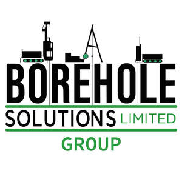

Trade Mark Journal No.2025/046 14 November 2025
UK00004289880 5 November 2025 (4,7,9,37,42)

- Class 4
- Industrial oils and greases, wax; lubricants; dust absorbing, wetting and binding compositions; fuels and illuminants; all-purpose penetrating oil; all-purpose lubricants; drilling lubricants; oil well drilling lubricants; drilling solutions; biofuels; coal; combustible oil; compressed natural gas; crude oil; engine oil; emulsified industrial oils; fuels; gas oil; gasoline; general purpose greases; geothermal steam for industrial purposes; hardened oils [hydrogenated oils for industrial purposes]; lubricants for industrial purposes; lubricating graphite; machine cutting oils; petrol; rape oil for lubricating machinery.
- Class 7
- Machines, machine tools, power-operated tools; motors and engines, except for land vehicles; machine coupling and transmission components, except for land vehicles; agricultural implements, other than hand-operated hand tools; pneumatic machines; cutters [machines]; diggers [machines]; drilling machines; drilling rigs; drilling rigs for drilling off-shore wells; hydraulic wrenches for use on drilling rigs; drilling rigs, floating or non-floating; oil drilling rigs; drilling rigs for drilling wells on land; barrels for use with drilling rigs; excavating machines; construction machines; hydraulic machines; excavating machines [earth moving machines]; drill presses [machines]; hole drilling machines; center drill bits being parts of machines; cam shafts; cam chains; machines for the construction industry; hydraulic control mechanisms for industrial robots; hydraulic control apparatus for industrial robots; pneumatic control apparatus for industrial robots; mechanical control mechanisms for industrial robots; machines for use in the construction industry; milling machines; milling-drilling machines; grouting machines; parts and fittings for all the aforesaid goods.
- Class 9
- Scientific, research, navigation, surveying, photographic, cinematographic, audiovisual, optical, weighing, measuring, signalling, detecting, testing, inspecting, life-saving and teaching apparatus and instruments; apparatus and instruments for conducting, switching, transforming, accumulating, regulating or controlling the distribution or use of electricity; apparatus and instruments for recording, transmitting, reproducing or processing sound, images or data; recorded and downloadable media, computer software, blank digital or analogue recording and storage media; computers and computer peripheral devices; apparatus for analyzing gases; detecting apparatus and instruments; laboratory apparatus and instruments; measuring instruments; apparatus and instruments for geolocation; diagnostic instruments for scientific use; apparatus and instruments for research purposes; apparatus and instruments for scientific purposes; measuring and testing machines and instruments; application simulation software; office and business applications; downloadable application programming interface [api] software; software for remote diagnostics; downloadable computer utility software; software for hardware reliability; software; bioinformatics software; utility software; simulation software; artificial intelligence software; parts and fittings for all the aforesaid goods.
- Class 37
- Construction services; installation and repair services; mining extraction, oil and gas drilling; construction; construction consultancy; industrial construction; underwater construction services; construction machinery rental; pipeline construction and maintenance; maintenance of construction machines; construction of hydraulic structures; construction, repair, maintenance and installation services; mining drilling; well drilling; rental of drilling and tunnelling apparatus; installation of water pipes; installation, maintenance and repair of electronic, electrical and mechanical apparatus; marine engineering [construction services]; installation of hydraulic equipment; rental of pneumatic or hydraulic construction machines, tools and apparatus; rental of pneumatic or hydraulic machines, tools and apparatus for use in construction; advisory services relating to the installation of hydraulic equipment; grouting services; information, advisory and consultancy services relating to the aforesaid.
- Class 42
- Scientific and technological services and research and design relating thereto; industrial analysis, industrial research and industrial design services; quality control and authentication services; design and development of computer hardware and software; analysis and testing services relating to electrical engineering apparatus; analysis of oil fields; assessment in the field of technology provided by engineers; assessment in the field of science provided by engineers; civil engineering; conducting of quality control tests; conducting research and technical project studies relating to the use of natural energy; conducting sampling and analysis services to check for contamination; conducting technical project studies for construction projects; consultancy in the field of industrial research; consultancy relating to technological services in the field of power and energy supply; design and development of engineering products; design and development of industrial products; design of engineering products; design of mechanical and micromechanical components; engineering; engineering (engineering work); engineering services; engineering work; engineering services relating to energy supply systems; environmental engineering services; geological test drilling; geoenvironmental engineering; engineering services in the field of energy technology; land surveying; provision of engineering reports; rental of science and technology equipment; research in the field of hydrogeology; research in the field of bioengineering; soil sampling for analysis purposes; surveying of land; surveys (geological -); surveys (land -); geotechnical investigations; technical consultancy in the field of light engineering; technical surveying; information, advisory and consultancy services relating to the aforesaid.
BOREHOLE SOLUTIONS GROUP LTD
Representative: Stobbs (ID No. 10471)